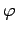
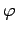
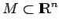
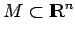

Inhalt Index DeskTop Bronstein

 Dynamische Systeme und Chaos Quantitative Beschreibung von Attraktoren Entropien
Dynamische Systeme und Chaos Quantitative Beschreibung von Attraktoren Entropien


Sei  ein kompakter metrischer Raum und ein stetiges dynamisches System mit diskreter Zeit auf
ein kompakter metrischer Raum und ein stetiges dynamisches System mit diskreter Zeit auf  . Für beliebiges wird eine Abstandsfunktion auf M durch
. Für beliebiges wird eine Abstandsfunktion auf M durch
| (17.36) |
definiert. Sei weiter die größte Anzahl von Punkten aus  , die mindestens einen Abstand in der Metrik von
, die mindestens einen Abstand in der Metrik von  zueinander haben. Die topologische Entropie des zeitdiskreten dynamischen Systems (17.3) bzw. der Abbildung  ist . Die topologische Entropie ist ein Maß für die Komplexität der Abbildung. Sei ein weiterer kompakter metrischer Raum und eine stetige Abbildung. Sind dann die beiden Abbildungen und
zueinander haben. Die topologische Entropie des zeitdiskreten dynamischen Systems (17.3) bzw. der Abbildung  ist . Die topologische Entropie ist ein Maß für die Komplexität der Abbildung. Sei ein weiterer kompakter metrischer Raum und eine stetige Abbildung. Sind dann die beiden Abbildungen und  topologisch konjugiert, so stimmen ihre topologischen Entropien überein. Insbesondere hängt die topologische Entropie nicht von der Metrik ab. Für beliebiges gilt . Ist sogar ein Homöomorphismus, so gilt . Aufgrund der letzten Eigenschaft definiert man für einen Fluß von (17.1) auf  die topologische Entropie über .
topologisch konjugiert, so stimmen ihre topologischen Entropien überein. Insbesondere hängt die topologische Entropie nicht von der Metrik ab. Für beliebiges gilt . Ist sogar ein Homöomorphismus, so gilt . Aufgrund der letzten Eigenschaft definiert man für einen Fluß von (17.1) auf  die topologische Entropie über .